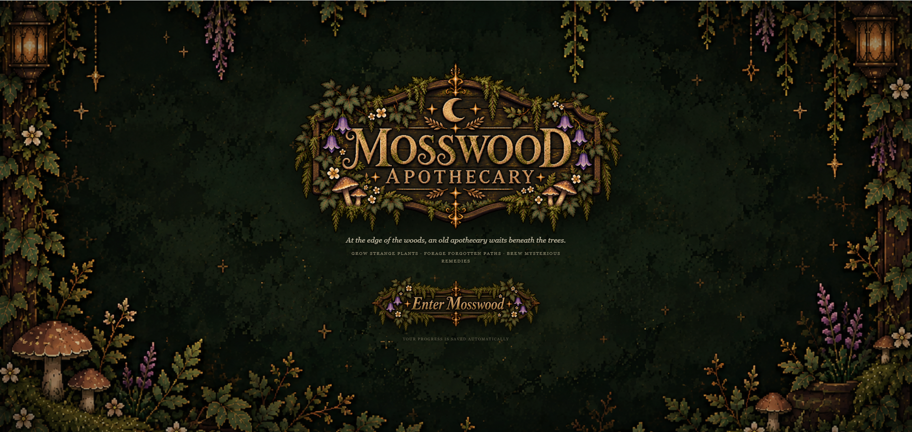
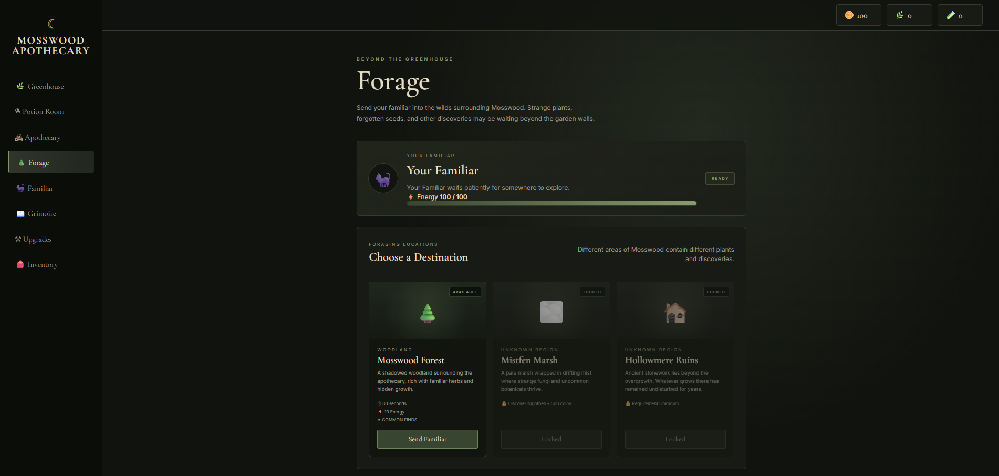
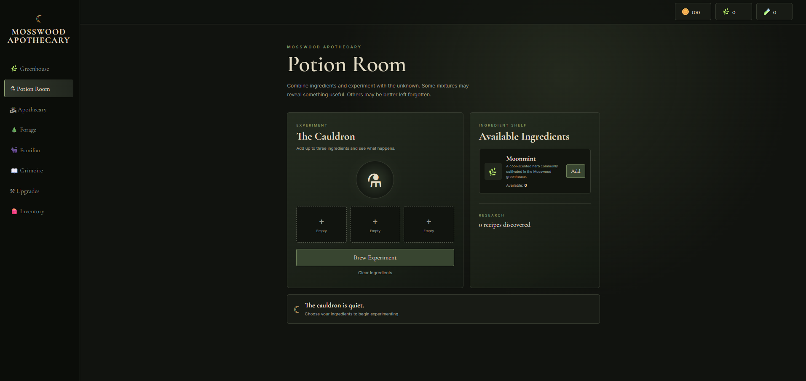

Mosswood
Apothecary
A browser-based apothecary and foraging game built from scratch with HTML, CSS, and JavaScript.
About the Project
Mosswood Apothecary is a browser-based game I created from scratch to challenge myself to build something interactive outside of my coursework. The game is centered around running a woodland apothecary, where players can forage for ingredients, manage resources, experiment with potions, and progress through different areas of Mosswood.
I wanted this project to combine programming with a style and concept I genuinely enjoyed. Building Mosswood gave me the opportunity to work more with JavaScript while also designing the interface, gameplay systems, and overall experience of the game.
Features
Foraging
Players can send their familiar into different areas of Mosswood to search for plants, seeds, and other resources.
Resource Management
Ingredients, coins, seeds, potions, and other resources are tracked and used across different parts of the game.
Potion Experimentation
Players can combine ingredients in the Potion Room and experiment with different combinations to discover recipes.
Progression
New discoveries, upgrades, recipes, and areas give players additional goals as they continue building their apothecary.
Screenshots

Mosswood Apothecary

Foraging & Exploration

Potion Experimentation
Development
Building Mosswood
I developed Mosswood using HTML for the structure, CSS for the visual design, and JavaScript for the gameplay and interactive systems.
As the project grew, I had to think about how each part of the game connected to the others. Resources collected through one system can affect what the player is able to do somewhere else, which made organizing the game's logic increasingly important.
Problem Solving
One of the biggest challenges has been keeping the different systems working together as I continue adding new features. A change to one part of the game can sometimes affect something completely different.
Testing the game has helped me find unexpected interactions, logic problems, and balancing issues. I have continued going back through the code, troubleshooting problems, and improving systems as the project develops.
What I Learned
Mosswood has given me more hands-on experience using JavaScript to create an interactive application rather than a static website. I have worked with game logic, changing values, user actions, resource management, progression, and keeping different parts of the interface updated as the player interacts with the game.
It has also given me more experience debugging my own work. As I test the game, I find things that do not behave the way I expected and have to trace the problem back through my code. Overall, this project has helped me become more comfortable taking an idea and turning it into a larger working project that I can continue improving over time.